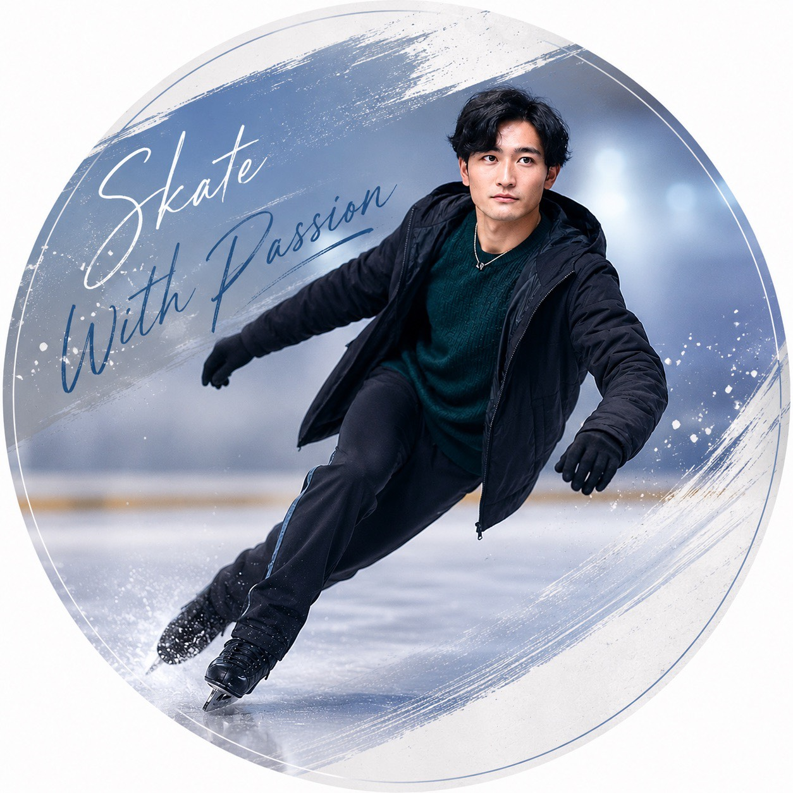
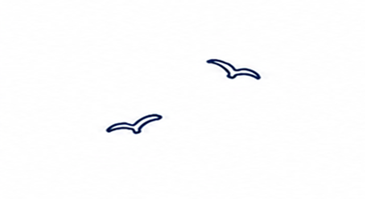
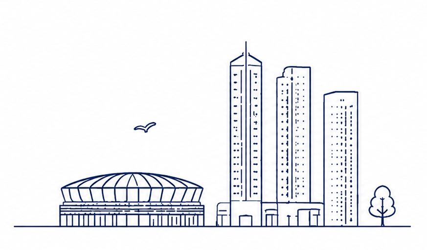
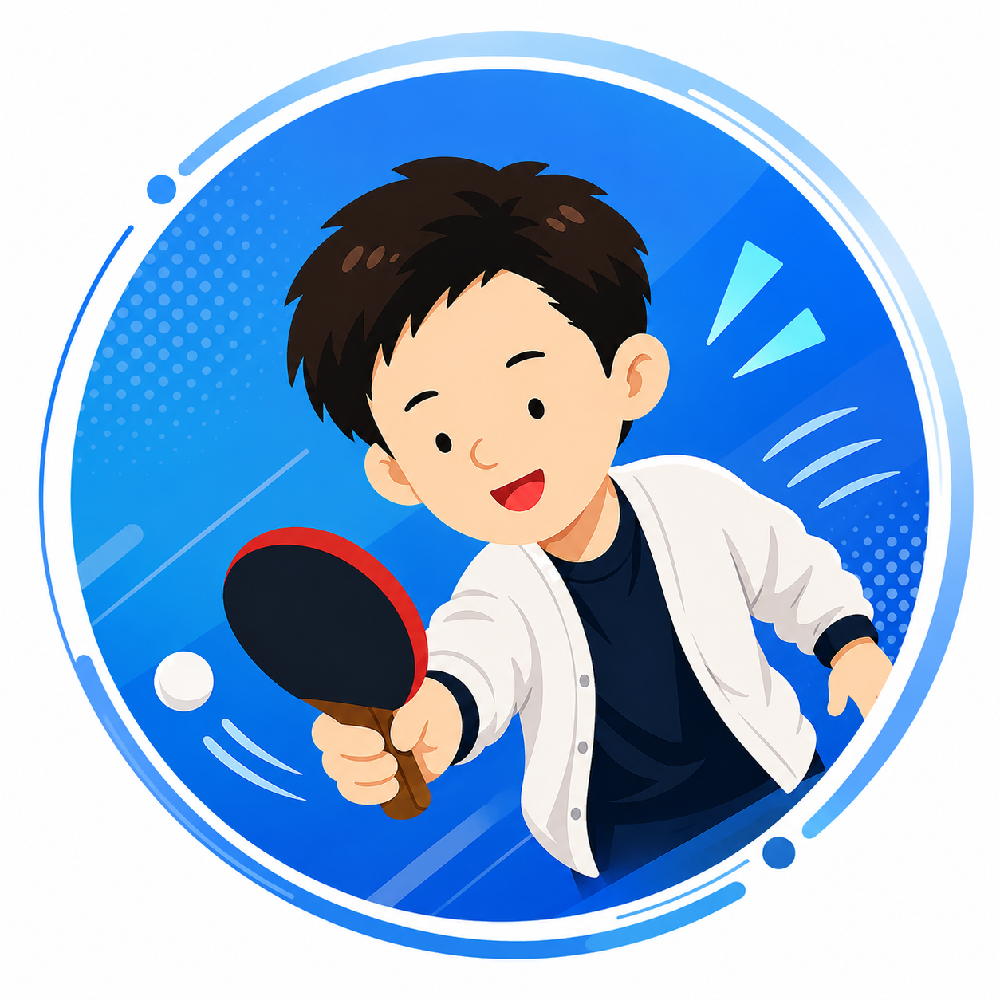

Tatsuya Sugihashi
3歳から水泳を始め、社会人になってから卓球やスケートをスタート。バレーボール、ジャズダンス、ボクササイズなど幅広いスポーツに親しみ、現在も週3日ジムに通っています。スポーツを通じて生まれる出会いや仲間との時間を大切にしながら、日々楽しく身体を動かしています。


Noy Sports Clubを支える
2人のメンバーをご紹介します。

3歳から水泳を始め、社会人になってから卓球やスケートをスタート。バレーボール、ジャズダンス、ボクササイズなど幅広いスポーツに親しみ、現在も週3日ジムに通っています。スポーツを通じて生まれる出会いや仲間との時間を大切にしながら、日々楽しく身体を動かしています。

卓球に長く親しみ、豊富な競技経験を持っています。バレーボールや水泳、ジムでのトレーニング経験もあり、身体を動かすことを楽しみながら、健康的なライフスタイルを大切にしています。これまで培ってきた経験を活かし、楽しみながら、新しいことにも積極的に挑戦しています。
卓球・水泳・スケートを中心に活動するスポーツコミュニティです。
仲間との時間を大切に、これからも成長し続けます。